Simulink symulacjiSimulink symulacji
Simulink symulacjiSimulink symulacjiRównania różniczkowe opisują, w jaki sposób zmiana jednej zmiennej wpływa na inne. Odgrywają kluczową rolę w naukach takich jak fizyka, chemia, biologia i medycyna, umożliwiając modelowanie zmian funkcji w czasie i badania populacji.
W moim opracowaniu korzystam z pakietu Simulink w MATLABie do graficznej reprezentacji rozwiązań równań różniczkowych. Rozważam reprezentację blokową z wykorzystaniem podstawowych bloków operujących na sygnałach. Przykłady obejmują model Lotki-Volterry, który opisuje związek między populacjami drapieżników i ofiar, oraz system Lorenza, który modeluje konwekcję termiczną w atmosferze.
Przeanalizuję model Lotki-Volterry, omówię jego koncepcje i przedstawię oparte na nim symulacje, a także rozważę system Lorenza do reprezentowania przepływu ciepła w atmosferze. W opracowaniu będzie zareprezentowane możliwe zastosowania równań różniczkowych i różnych sposobów ich graficznej reprezentacji w celu zilustrowania procesów zachodzących w wybranych modelach.
Model Lotki-Volterra to model matematyczny wykorzystywany do opisu dynamiki interakcji między dwoma gatunkami w ekologii populacji. Model ten zakłada, że zmiany w populacji obu gatunków zależą od ich interakcji, a także czynników zewnętrznych, takich jak dostępność zasobów i siedlisko.
\[ \begin{cases} \frac{dx}{dt} &= (a - by) \\ \frac{dy}{dt} &= (cx - d)y \end{cases} \]$$ {\frac{dx}{dt} = ax - bxy} $$
$$ {\frac{dy}{dt} = (cx - d)y} $$
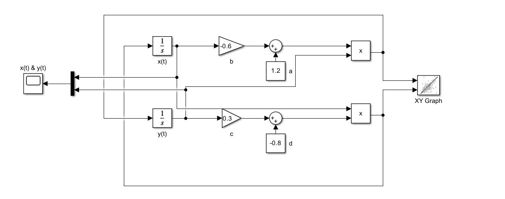
System Lorentza to układ równań różniczkowych po raz pierwszy zbadany przez matematyka i meteorologa Edwarda Lorentza. Jest on niezwykły, ponieważ ma chaotyczne rozwiązania przy pewnych wartościach parametrów i warunków początkowych. W szczególności atraktor Lorentza jest zbiorem chaotycznych rozwiązań układu Lorentza.
\[ \begin{cases} \frac{dx}{dt} &= \sigma(y - x) \\ \frac{dy}{dt} &= x(\rho - z) - y \\ \frac{dz}{dt} &= xy - \beta z \end{cases} \]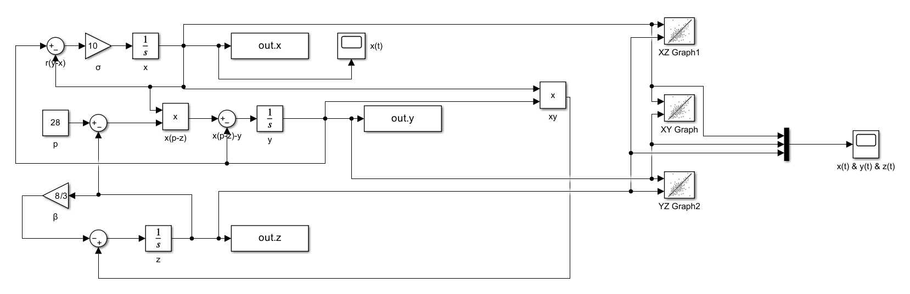
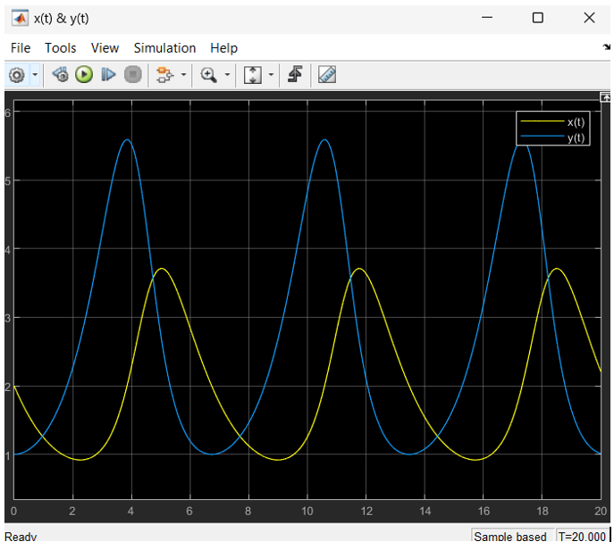
Zmienne w modelu przyjmuja wartosci: x(0) = 2, y(0) = 1, a =1.2 , b =0.6, c =0.3, d=0.8.
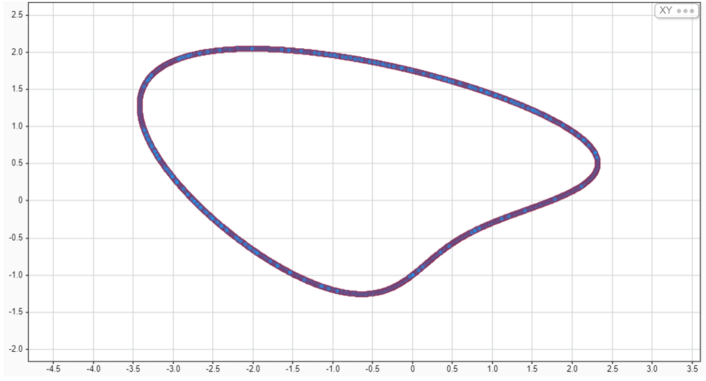
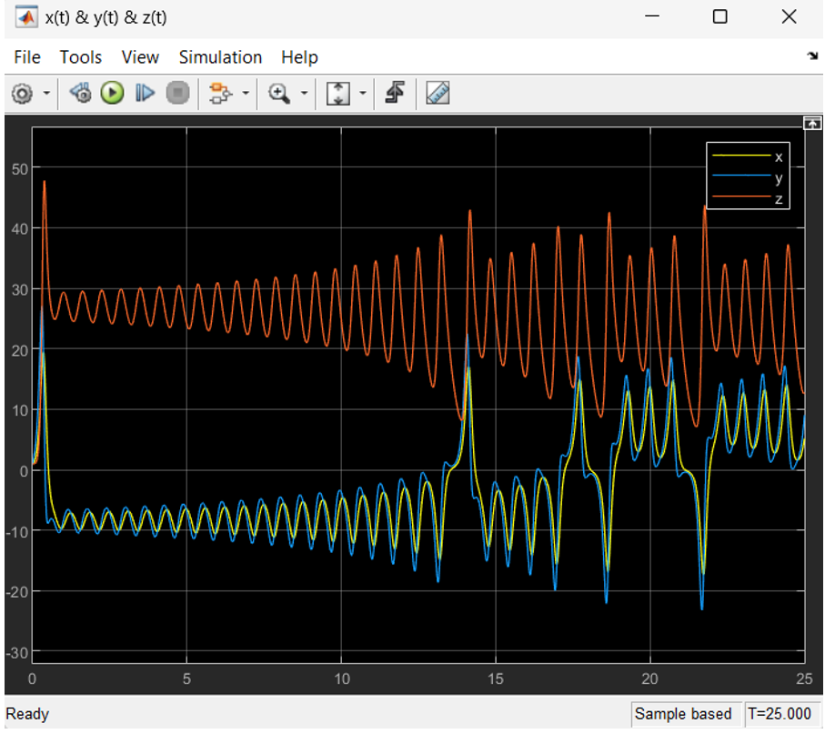
Przebiegi x(t)&y(t)&z(t)
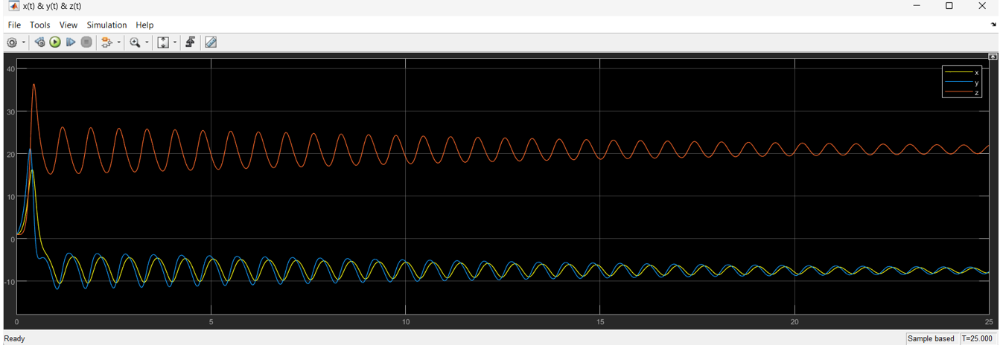
Przebiegi x(t), y(t), z(t) dla eksperymentalnie dobranego całkowitoliczbowego 'ro' możliwie bliskiego wartości 28, które zapewnia obserwowaną zbieżność procesu do punktu równowagi. Wartość ‘ro’ = 22.
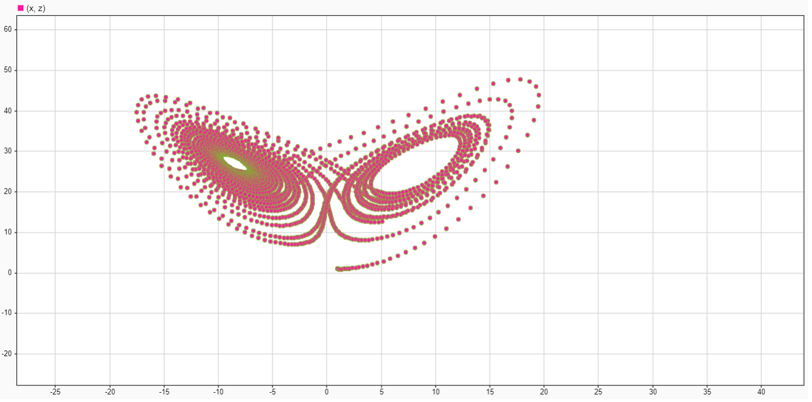
przebiegi fazowe z(x)
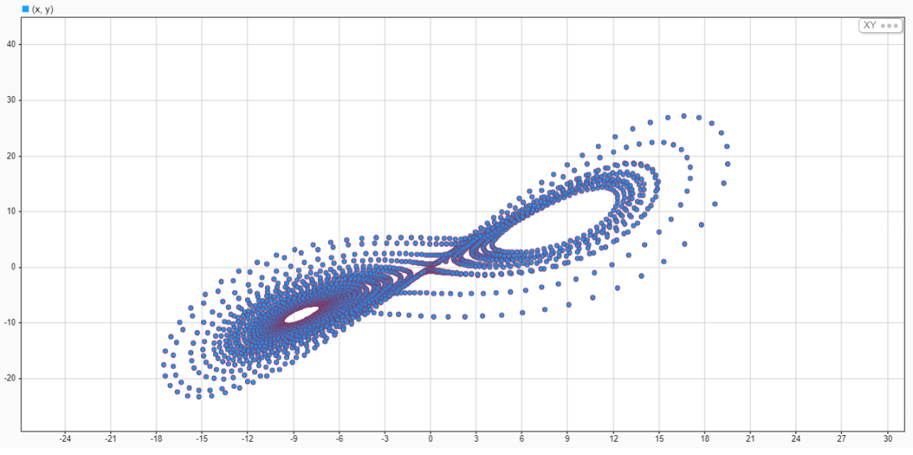
przebiegi fazowe y(x)
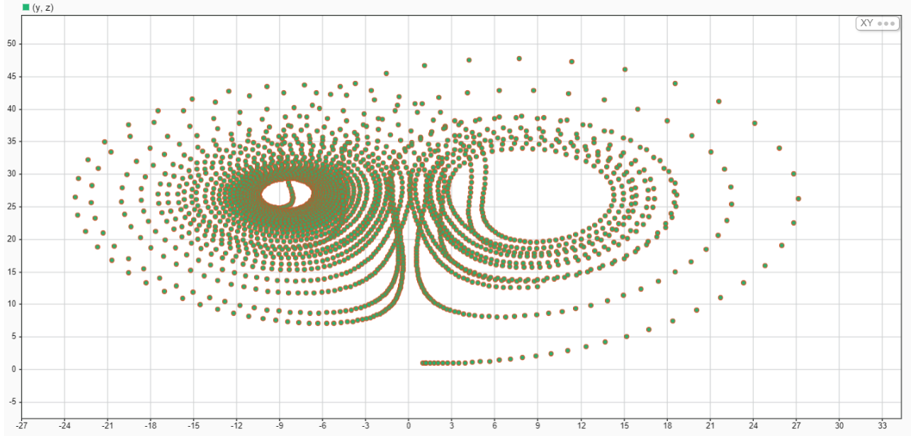
przebiegi fazowe y(z)
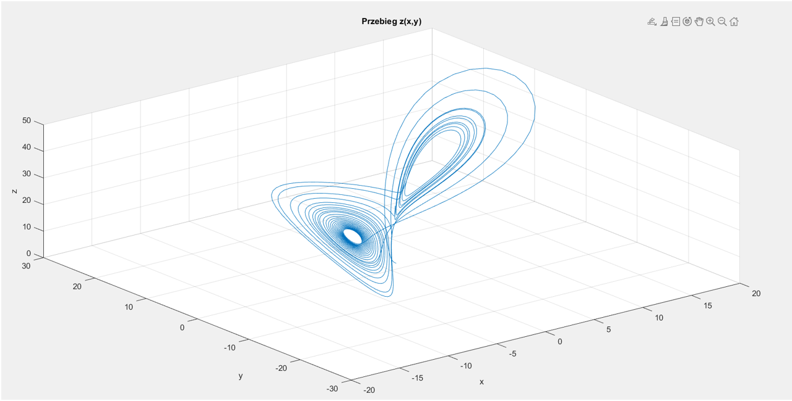
3D przebieg z(x,y)
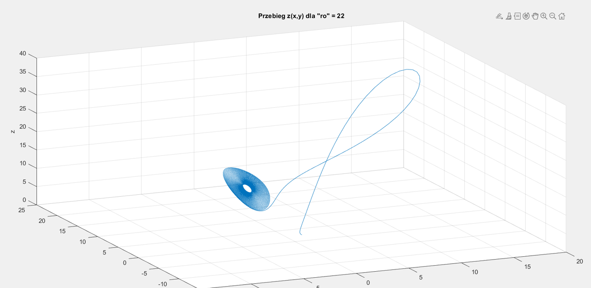
3D przebieg z(x,y) dla „ro” = 22
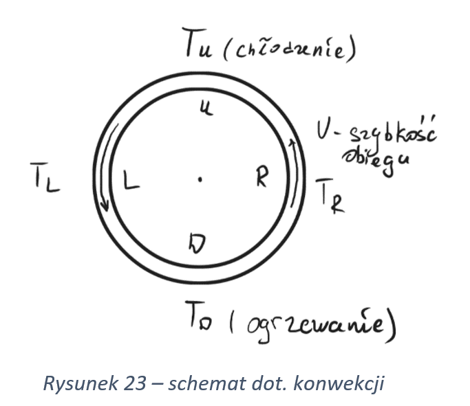
\( x(t) \sim V, \) \( \begin{cases} x(t) < 0 & \text{– kierunek zgodny ze wskazówkami zegara,} \\ x(t) > 0 & \text{kierunek przeciwny do wskazówek zegara} \end{cases} \)
\( y(t) \sim (T_R - T_L) \)
\( z(t) \sim (T_D - T_U) \)
System Lorenza modeluje konwekcję termiczną w atmosferze. Zmienna x(t) oznacza prędkość ruchu powietrza, y(t) - rozkład poziomy temperatury, a z(t) - rozkład temperatury w pionie. Wartości dodatnie z(t) wynikają z konwekcji, gdzie ciepłe powietrze unoszą się w górę, a ochłodzone opadają. To powoduje wzrost temperatury wraz z wysokością, co odpowiada z(t).
Zmienna z(t) w modelu Lorenza odnosi się do rozkładu temperatury w pionie. W kontekście konwekcji termicznej jest to różnica mięzdy ciepłym a zimnym powietrzem. Z doświadczeń wynika że ciepłe powietrze jest prawie zawsze wyżej niż zimnie. Dlatego z(t) przyjmuje wartosci dodatnie.
Zauważalna korelacja pomiędzy zmiennymi x(t) a y(t) w układzie Lorenza wynika z głębszych związków fizycznych. W tym kontekście, zmienna x reprezentuje przepływ ciepła, zmienna y odzwierciedla rotację prądów powietrznych, a zmienna z opisuje pionowy przepływ ciepła. W naturze, przepływ ciepła jest ściśle związany z rotacją prądów powietrznych w atmosferze, co znajduje odzwierciedlenie w modelu Lorenza. Drugie równanie tego modelu matematycznego wyraża, że zmiana rotacji prądów powietrznych zależy od różnicy między przepływem ciepła a pionowym przepływem ciepła. Ta złożona relacja fizyczna jest uwzględniana przez układ równań Lorenza, co pozwala na lepsze zrozumienie dynamiki systemów atmosferycznych.